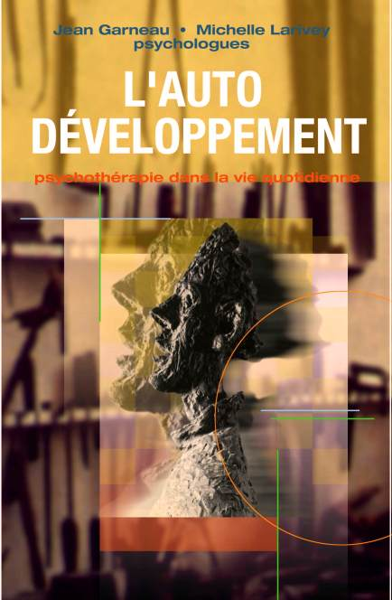
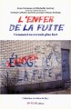

Ressources en Développement
Les psychologues humanistes branchés !
Vous cherchez de l'aide psychologique?
Voyez les autres sections:
Voyez aussi...
Vous êtes un professionnel de la santé mentale?
Par Jean Garneau , psychologue
La lettre du psy
Volume 6, No 11a Décembre 2002
| Avant d'imprimer ce document | Mise en garde | Articles |
Bilan pour 2002
La mi-décembre déjà! C’est un moment où nous avons naturellement tendance à réviser l’année qui s’achève, à faire le bilan de nos réalisations pour orienter nos efforts futurs. Pour La lettre du Psy, c’est la fin du volume 6. Déjà il faut penser à amorcer la 7e année de notre magazine électronique.
Les années ne sont pas toutes semblables. Certaines servent surtout à faire naître de nouveaux projets d’autres permettent de faire avancer ceux qui sont en marche. L’année 2002 s’est surtout avérée une année d’aboutissements. Plusieurs de nos projets en marche depuis un bon moment ont finalement été complétés cette année.
- La lettre du Psy
D’abord, nous avons enfin adopté le format html (style page Web) pour La lettre du Psy. Nous y pensions depuis un certain temps, mais c’est au début de 2002 que nous avons décidé de passer aux actes.
Pour n’exclure aucun de nos abonnés, nous avons décidé d’offrir les deux formats en parallèle: l’ancien format (texte) reste disponible pour ceux qui préfèrent cette option. À notre grande surprise, c’est près du tiers de nos abonnés qui a choisi ce format malgré l’absence de couleur et d’illustrations. Nous continuerons donc de publier en deux formats pour le moment.
Nous avons profité de ce passage pour faire un grand ménage dans la liste de nos abonnés. Comme il fallait obtenir une réponse de chaque abonné pour l’inscrire au format de son choix, nous avons décidé d’abandonner nos anciennes listes et de distribuer notre magazine qu’aux individus qui ont répondu à nos messages.
Résultat: des listes d’abonnés nettement réduites et plusieurs protestations de personnes qui se plaignaient de ne plus recevoir leur copie. Les personnes qui reçoivent maintenant notre publication sont celles qui la veulent vraiment et la lisent réellement. Les abonnés qui se plaignaient de recevoir deux exemplaires sont également un souvenir désuet.
- Les parutions
Cette année a été fertile du côté de nos publications. En plus des articles et des poèmes publiés chaque mois dans La lettre du Psy, nous avons enrichi notre écurie de plusieurs ouvrages.
|
 | Il y a d’abord «L’Auto-Développement» dont nous avons récupéré tous les droits et que nous avons réimprimé chez ReD éditeur afin de répondre à la demande constante. Ceci nous permettra d’attendre plus confortablement le moment d’en préparer une nouvelle version. C’est donc le même classique qu’on retrouve sous une nouvelle couverture plus moderne et au symbolisme plus intéressant. Après la parution (fin 2001) de la deuxième édition du programme Savoir Ressentir, c’est un autre de nos ouvrages les plus important qui voit son existence prolongée pour répondre à la demande du public. |
| Et dès le printemps c’est «La puissance des émotions» que Michelle Larivey signait aux Éditions de l’Homme. Il s’agit d’un ouvrage majeur, fruit de 25 ans de réflexion, de discussions, d’expérience clinique, de lectures et de rédaction. Un ouvrage-phare auquel nous avons voulu garantir la plus large distribution en le confiant aux Éditions de l’Homme. Jusqu’à présent, nous sommes très satisfaits des résultats en Europe comme au Québec. Nous sommes également heureux des nombreuses retombées directes et indirectes, notamment la sortie de «La puissance des émotions» en version CD aux éditions Alexandre Stanké, dans la collection COFFRAGANTS. |

|
|
 | Et c’est en fin d’automne que l’imprimeur nous a livré notre petit dernier: «L’enfer de la fuite». Alors que «Les émotions source de vie» expliquait surtout le fonctionnement sain de la vie émotive, ce deuxième ouvrage de la collection «La lettre du Psy» porte sur les divers maux qui nous affligent lorsque nous refusons de tenir compte de notre expérience émotionnelle. Il est déjà très bien accueilli par nos lecteurs habituels et suscite beaucoup d’intérêt chez les journalistes du domaine. |
Les projets pour 2003
Malgré les nombreuses parutions de 2002, nous devons reconnaître que nous n’avons pas réussi à compléter tous les ouvrages projetés. Le programme «Maîtriser l’expression efficace» (auparavant intitulé «L’art d’être expressif») n’est pas encore offert au public.
Il aurait dû l’être dans sa version actuelle, mais nous avons eu l’idée d’une amélioration importante pendant la dernière révision. Il s’agit d’une addition que permet la version Online du programme et qui contribuera sans doute à en augmenter encore l’efficacité.
Nous avons donc choisi de retarder la parution afin d’y intégrer ce changement qui touche la plupart des quelque 25 leçons du programme. Nous espérons que «Maîtriser l’expression efficace» sera disponible au printemps (dans sa version Online).
La deuxième édition du «Guide du psychothérapeute» est déjà avancée dans sa préparation. Elle paraîtra sans doute à peu près à la même époque. Elle contiendra non seulement toutes les révisions et les corrections à la première édition, mais aussi tout le nécessaire pour faciliter aux psychothérapeutes l’utilisation des deux programmes.
Un autre manuscrit de Michelle Larivey a été accepté par Les Éditions de l’Homme. Nous prévoyons une parution à l’automne 2003. Le sujet et le titre sont encore secrets, mais nous croyons qu’il s’agira, encore une fois, d’une contribution importante à l’éducation émotionnelle qui reste encore aujourd’hui le parent pauvre de notre préparation à la vie.
Par ailleurs, nous avons amorcé la préparation d’un troisième ouvrage dans la collection La lettre du Psy. Celui-ci portera sur les relations interpersonnelles et il paraîtra probablement au début de 2004.
Plusieurs autres projets sont en marche, avec des échéances en 2003, mais ils ne peuvent encore être dévoilés. Nous les annoncerons dans La lettre du Psy dès que sera possible.
 Un autre projet en voie de réalisation: les sentiers Infopsy. Il s’agit d’un regroupement thématique des différents documents offerts sur le site redpsy.com, dans les diverses sections (infopsy, guide des émotions, images intérieures, coffre d’outils).
Un autre projet en voie de réalisation: les sentiers Infopsy. Il s’agit d’un regroupement thématique des différents documents offerts sur le site redpsy.com, dans les diverses sections (infopsy, guide des émotions, images intérieures, coffre d’outils).
Nous avons remarqué qu’il est de plus en plus difficile de consulter notre site à cause du nombre de documents qu’il contient (plus de 600 documents originaux). Le regroupement en quatre sections que nous avions créé il y a quelques années est encore pertinent, mais il est maintenant tout à fait insuffisant.
En faisant un regroupement en fonction des préoccupations auxquelles ils peuvent aider à répondre, nous voulons faciliter la recherche de ceux qui se servent de notre site. Plutôt que de chercher les documents pertinents dans une liste de titre plus ou moins fantaisistes, nous invitons l’internaute à choisir le domaine qui le préoccupe parmi une douzaine de sujets.
Mais nous avons décidé d’aller un peu plus loin afin de favoriser une meilleure utilisation de nos documents. Au lieu de nous contenter d’offrir une simple liste de liens, nous prenons soin de présenter les divers éléments dans l’ordre où il est le plus efficace de les consulter. C’est donc un cheminement que nous proposons, en plus d’une sélection des documents les plus pertinents. C’est pour cette raison que nous avons choisi d’intituler cette section «Les sentiers Infopsy», afin d’évoquer la découverte progressive à travers un cheminement balisé.
Pour un aperçu de l’évolution de ce projet, vous pouvez consulter la version préliminaire qui se trouve sur notre site. Il s’agit d’un document de travail évidemment incomplet. Cette version n’a pas encore été vérifiée et peut comporter plusieurs erreurs. Nous vous permettons d’y jeter un coup d’oeil pour illustrer ce nouveau développement et pour que vous puissiez voir évoluer la réalisation de ce projet. Vos commentaires sont les bienvenus à cette adresse: sentiers@infopsy.com
Les vacances
Selon la tradition établie depuis quelques années, toute l’équipe de La lettre du Psy prend des vacances à l’occasion des fêtes de fin d’année. Nous interrompons donc la publication régulière de notre magazine électronique jusqu’à la mi-janvier. Ceci nous permettra de reprendre notre souffle et de faire nos réserves d’énergie pour revenir à la publication au rythme régulier dès janvier 2003.
Encore cette année, Karène Larocque a offert de préparer un index cumulatif pour vous aider à retrouver plus facilement les documents qui vous intéressent ou qui vous auraient échappé. Merci Karène!
Comme l’index cumulatif prend de l’ampleur aussi vite que notre site dans son ensemble, il nous a semblé peu approprié de faire encore un index regroupant tous nos documents depuis le début. Nous avons choisi une nouvelle formule qui nous semble plus commode.
L’index que vous recevrez dans notre prochain numéro (peu avant Noël) couvrira uniquement l’année 2002. Il permettra de retrouver d’un simple clic chaque document paru cette année. Il fournira également un lien direct vers l’index cumulatif des volumes 1 à 5.
Cet index cumulatif demeure à votre disposition sur notre site. Vous pouvez le consulter à cette adresse: http://www.redpsy.com/letpsy/cumulatif.html
Profitons des fêtes de fin d’année
La fin de l’année arrive en trombe! Le temps des réjouissances, des fêtes traditionnelles, des retrouvailles des cadeaux et des souhaits pour la nouvelle année. Une belle période, mais aussi un moment qui est synonyme de souffrance pour un grand nombre d’individus, pas nécessairement les plus défavorisés.
Les personnes qui vivent dans l'isolement ont tendance à souffrir plus intensément de leur solitude à Noël et au tournant de l'année. Même celles qui sont bien entourées, mais éloignées d'un être aimé ou d'un parent, souffrent plus qu'à l'habitude de cette distance. Aux fêtes, nous avons tous tendance à être plus sensibles à la douleur d'être séparés des personnes qui nous sont chères. Nous sommes également plus sensibles à la distance émotionnelle qui s’est installée, mine de rien, entre nous et nos proches.
- Pourquoi est-ce plus intense à cette époque de l’année?
Bien sûr, la réalité n’est jamais aussi éblouissante que nos souvenirs d'enfance; la plupart du temps nous sortons déçus de nos "réjouissances" traditionnelles. Dans l'espoir d'un moment magique, nous mangeons trop, buvons trop et rions trop fort pour ce qui nous habite vraiment. Et nous oublions l'essentiel: rencontrer nos proches, renouer avec eux, alimenter nos relations avec eux.
Car c’est bien la qualité de notre contact avec les personnes qui nous sont chères qui fait toute la différence! Plus précisément, c’est à travers une expression de qualité que nous pouvons ressusciter une relation éteinte ou raviver une flamme qui se mourait. Nous pouvons être comblés si nous réussissons à communiquer d’une façon qui réponde à nos besoins. Mais si nous ne profitons pas de l’occasion, c’est la déception qui nous guette.
- Des outils pour les fêtes
Nos souhaits pour 2003
Toute l'équipe se joint à moi pour vous souhaiter des fêtes qui soient l'occasion de rendre à nouveau nourrissantes vos relations avec les personnes importantes de votre vie. Des retrouvailles qui recréent et resserrent les liens. C'est d'ailleurs ce que nous nous souhaitons à nous-mêmes et nous avons l'intention de prendre les moyens pour que ce souhait se réalise.
Pour ce qui est de l’année 2003, nous vous souhaitons qu'elle se montre à la mesure de la qualité de vos efforts. Que les récoltes soient proportionnelles à ce que vous investirez dans votre développement personnel, dans vos relations interpersonnelles et dans vos entreprises professionnelles.
Nous vous souhaitons aussi d'avoir la santé nécessaire pour profiter des résultats que vous obtiendrez et de la suite de votre cheminement. Nous ne pouvons faire grand-chose pour votre santé, sinon vous recommander de voir à votre équilibre psychique. Mais ce que nous pouvons faire et ferons de notre mieux, c’est de continuer à vous offrir des outils de qualité pour appuyer vos efforts d'amélioration de votre vie.
Le bonheur devrait suivre...
-
Jean Garneau
éditeur de La lettre du Psy